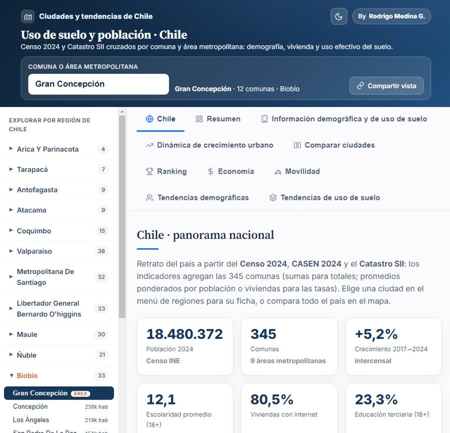
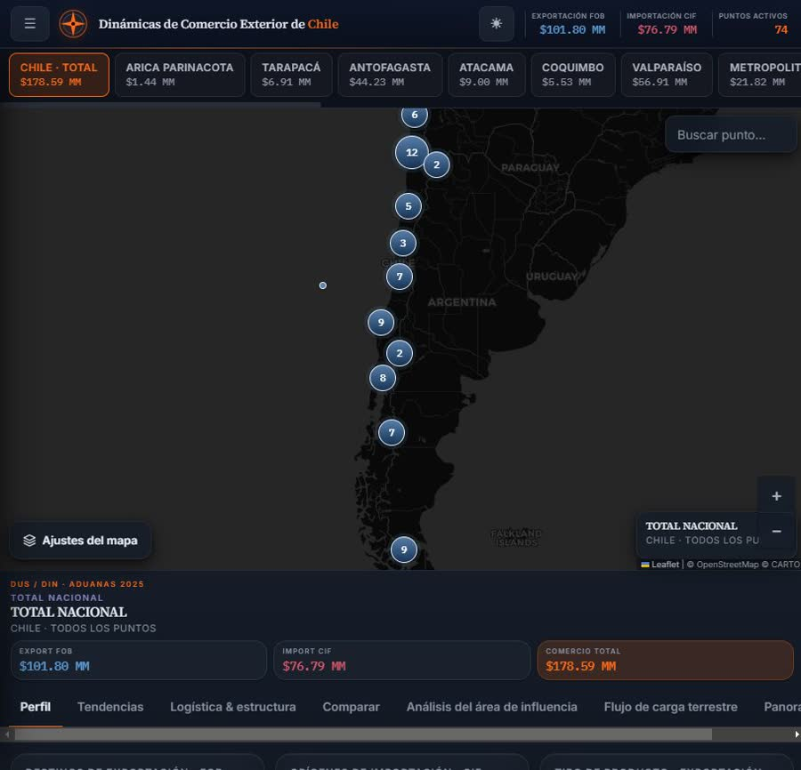
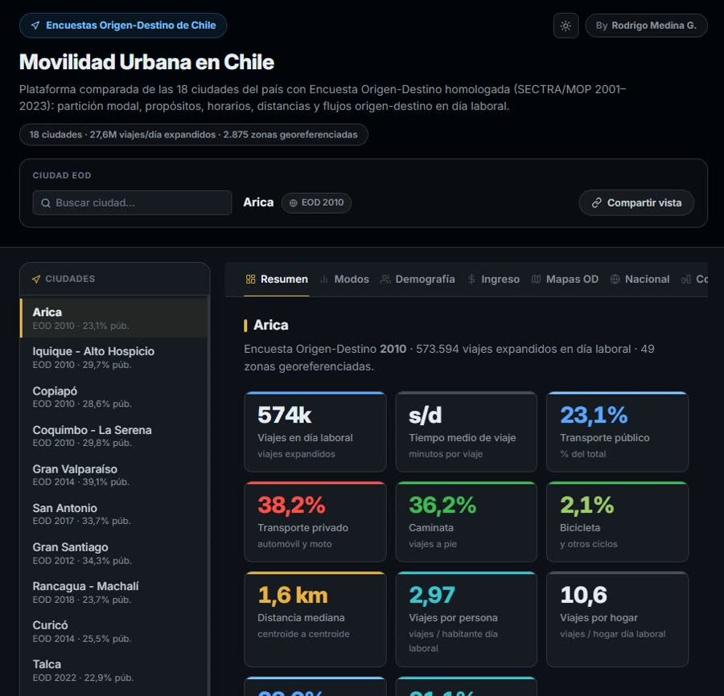

Movilidad y transporte
IMIV (elaboración, revisión y rescate de informes observados), modelación, evaluación social y diagnóstico de transporte público.
Movilidad · Territorio · Logística · Datos
Convertimos los datos que ya existen —GPS del transporte, Aduanas, Censo, SII— en evidencia clara para planificar, invertir y fiscalizar.
19
Años de trayectoria
+25
Estudios dirigidos
27,6 M
Viajes diarios modelados
345
Comunas analizadas
Qué hacemos
Seis líneas de trabajo, todas apoyadas en la misma capa de analítica propia.
IMIV (elaboración, revisión y rescate de informes observados), modelación, evaluación social y diagnóstico de transporte público.
Respaldo técnico para planes reguladores, PLADECO, PROT y PIIMEP, con datos duros de población, suelo e inversión.
Carga por puerto y punto de transferencia, áreas de influencia y flujos terrestres para operaciones y due diligence.
La capa transversal: informes a medida, tableros y análisis exploratorios sobre cientos de millones de registros.
Localización de inversiones, lectura de mercado por comuna y evolución del suelo para decidir dónde comprar o construir.
Aerofotogrametría, topografía, geomática y teledetección para proyectos de ingeniería e inmobiliarios.
Ejemplos de productos
La barrera de entrada no es el tablero: es la integración. Georreferenciar millones de predios, cruzar fuentes incompatibles y procesar cientos de millones de registros.

SII a nivel de manzana + Censo + CASEN en 345 comunas: crecimiento, densificación y avalúo.

DUS/DIN de Aduanas por punto de transferencia: hinterland y flujos de carga por puerto.

Encuestas Origen-Destino en un repositorio, con modelo calibrado de generación, distribución y partición modal.
Quiénes somos
Urbis Advisory nace de casi dos décadas dirigiendo estudios de planificación de transporte e infraestructura en Chile. Detrás está Rodrigo Medina González, ingeniero civil y magíster en Política y Gobierno, con trayectoria en la Dirección Nacional de Planificación del Ministerio de Transportes.
Conocer más →Cuéntanos el problema y evaluamos cómo la evidencia disponible puede apoyarlo.
Conversemos